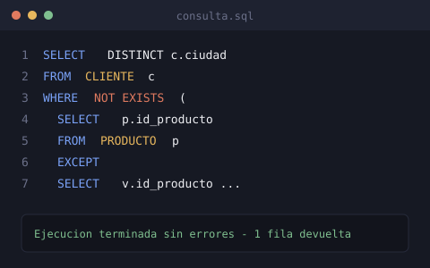

historial
Experiencia
Aún no tengo experiencia laboral formal — estoy en la etapa de formación académica y construyendo mis primeros proyectos. Esta sección la iré llenando con pasantías, pequeños trabajos freelance o proyectos de clase a medida que avance en la carrera.
Diseño de un esquema relacional con tres entidades y sus relaciones, y formulación de consultas complejas en álgebra relacional, cálculo relacional y SQL — incluyendo divisiones relacionales para responder preguntas como "clientes que compraron todos los productos".
proyecto destacado
Sistema de consultas sobre ventas (SQL)
Proyecto de la materia Base de Datos II: un esquema con las tablas CLIENTE, PRODUCTO y VENTA, implementado en SQLite. El reto principal fue traducir preguntas de negocio (como "¿qué ciudades han comprado todo el catálogo?") a las tres formas de consulta: álgebra relacional, cálculo relacional y SQL ejecutable, verificando que las tres coincidieran en su lógica.
